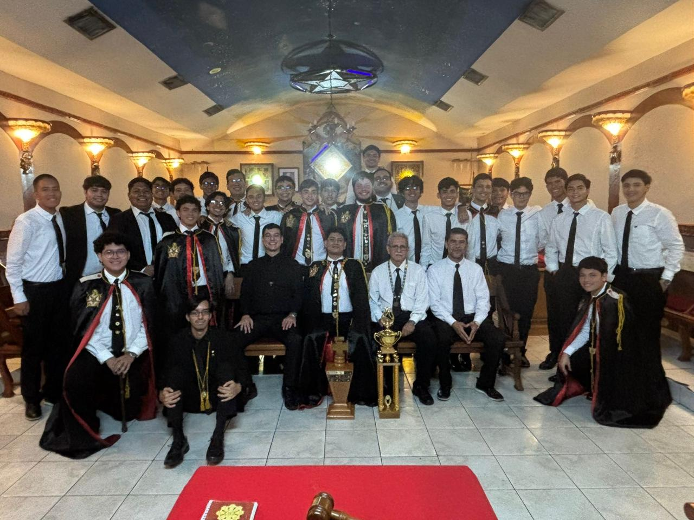
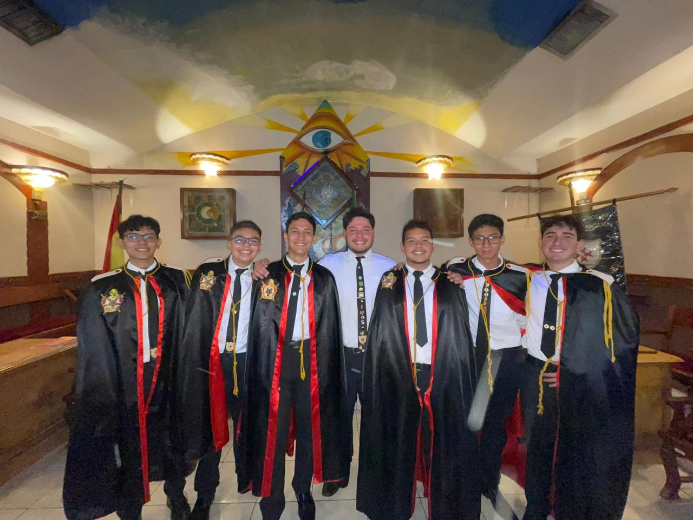

Fraternidad
Más que una organización, somos una familia unida por lazos de hermandad que perduran para toda la vida.

DeMolay International · Bolivia
Formando líderes, forjando hermanos. Una fraternidad dedicada a construir el carácter de los jóvenes de hoy.
Por qué Cantera
Una escuela diseñada para el crecimiento personal y la excelencia fraternal.
Más que una organización, somos una familia unida por lazos de hermandad que perduran para toda la vida.
Desarrollamos habilidades de gestión, oratoria y toma de decisiones en un entorno práctico y seguro.
Impactamos positivamente en nuestra comunidad a través de proyectos de ayuda social y voluntariado.
La Orden
La Orden DeMolay es la organización fraternal de carácter iniciático para jóvenes varones entre 12 y 21 años más grande del mundo. Fundada hace más de un siglo, su misión global es formar ciudadanos ejemplares y líderes íntegros.
Patrocinada por la Masonería, DeMolay enseña virtudes cívicas y morales a través de rituales simbólicos y una estructura de autogestión liderada por los propios jóvenes.

Nuestros pilares
Santa Cruz
Momentos que definen nuestra historia local.
1 /
Únete a una red de jóvenes comprometidos con el liderazgo y la excelencia. El camino hacia la mejor versión de ti mismo comienza aquí.